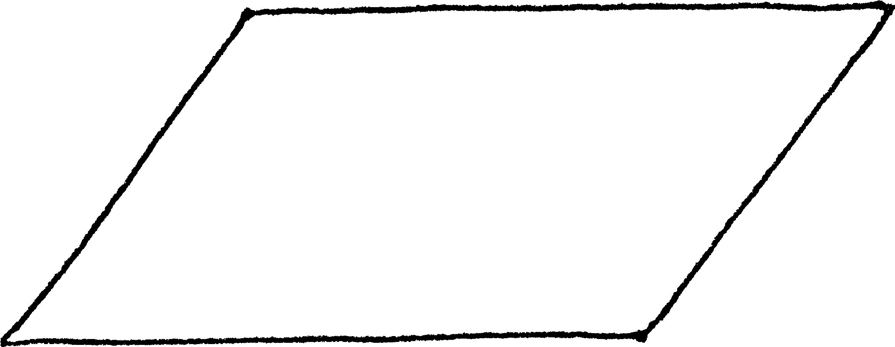
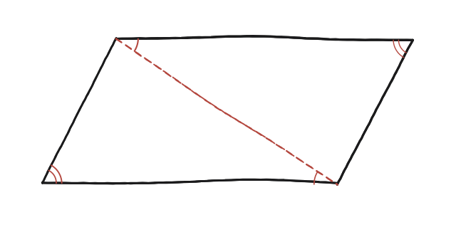

Un paral·lelogram és un polígon de quatre costats amb els costats oposats paral·lels (és a dir, una caixa inclinada). Els angles oposats d'un paral·lelogram han de ser iguals?

Només la definició, res més
Per definició, un paral·lelogram té els dos parells de costats oposats paral·lels. Això —i només això, cap mesura ni suposició addicional— és tot el que es pot fer servir com a punt de partida.
Una diagonal, dos triangles
Traçant una diagonal, el paral·lelogram queda dividit en dos triangles que comparteixen aquesta diagonal com a costat comú. Com que els costats del paral·lelogram són paral·lels dos a dos i la diagonal fa de transversal comuna, es formen dos parells d'angles alterns interns iguals: un parell d'un costat de la diagonal, un altre parell de l'altre costat —dos parells diferents, no el mateix angle repetit.
Els dos triangles són congruents
Amb els dos parells d'angles alterns iguals més la diagonal compartida entre els dos triangles (angle-costat-angle, ASA), els dos triangles resulten congruents. D'aquí, a més, el tercer parell d'angles —els que cauen exactament als dos vèrtexs que la diagonal travessa— també ha de ser igual, perquè en cada triangle els tres angles ja estan determinats un cop se'n coneixen dos.

Sumar els angles a cada vèrtex del paral·lelogram
Cada vèrtex del paral·lelogram original queda format per un angle d'un dels dos triangles i un angle de l'altre. Als dos vèrtexs oposats que la diagonal no travessa, l'angle complet del paral·lelogram és, cadascun, un dels angles ja demostrats iguals entre els dos triangles —per tant, aquests dos vèrtexs oposats tenen angles iguals. El mateix raonament, aplicat a l'altra diagonal (que uneix els altres dos vèrtexs), demostra la igualtat per al segon parell de vèrtexs oposats.
Sí, sempre: una diagonal divideix el paral·lelogram en dos triangles congruents (ASA, a partir de dos parells d'angles alterns interns), i d'aquesta congruència se'n dedueix directament que els angles situats a vèrtexs oposats del paral·lelogram són iguals.
Comprovació
Si un angle del paral·lelogram fa 65°, el seu oposat també ha de fer 65°, i els altres dos (adjacents a aquest) han de fer 115° cadascun —perquè els quatre sumen 360° i els angles adjacents entre ells sumen sempre 180° (angles suplementaris entre paral·leles).